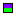
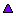

√руппа [только в древовидном списке]
√руппа [только в древовидном списке]Ќиже приведены значки, используемые дл€ отображени€ типов элементов в древовидном и простом списках. ѕримечание. ¬ древовидном списке значки отображаютс€ всегда. ¬ простом списке столбец со значками может быть добавлен только как первый столбец.
√руппа [только в древовидном списке]
ѕуста€ группа [только в древовидном списке]
 ќбычный элемент
ќбычный элемент
 ќбычный элемент с псевдонимами
ќбычный элемент с псевдонимами
 ќбычный элемент с €рлыками
ќбычный элемент с €рлыками
 ѕсевдоним
ѕсевдоним
ярлык
роме того, у обычных элементов может быть задана дата истечени€ парол€. ≈сли дл€ таких элементов настроено предупреждение (например, за 5 дней до истечени€), их значки станут наполовину пурпурными при наступлении срока предупреждени€.
 ќбычный элемент Ч срок действи€ парол€ истечЄт в течение указанного в предупреждении времени.
ќбычный элемент с псевдонимами Ч срок действи€ парол€ истечЄт в течение указанного в предупреждении времени.
ќбычный элемент с €рлыками Ч срок действи€ парол€ истечЄт в течение указанного в предупреждении времени.
” элементов с истЄкшим паролем весь значок становитс€ пурпурным.
ќбычный элемент Ч срок действи€ парол€ истЄк.
 ќбычный элемент с псевдонимам Ч срок действи€ парол€ истЄк.
 ќбычный элемент с €рлыками Ч срок действи€ парол€ истЄк.
ќбычный элемент с €рлыками Ч срок действи€ парол€ истЄк.